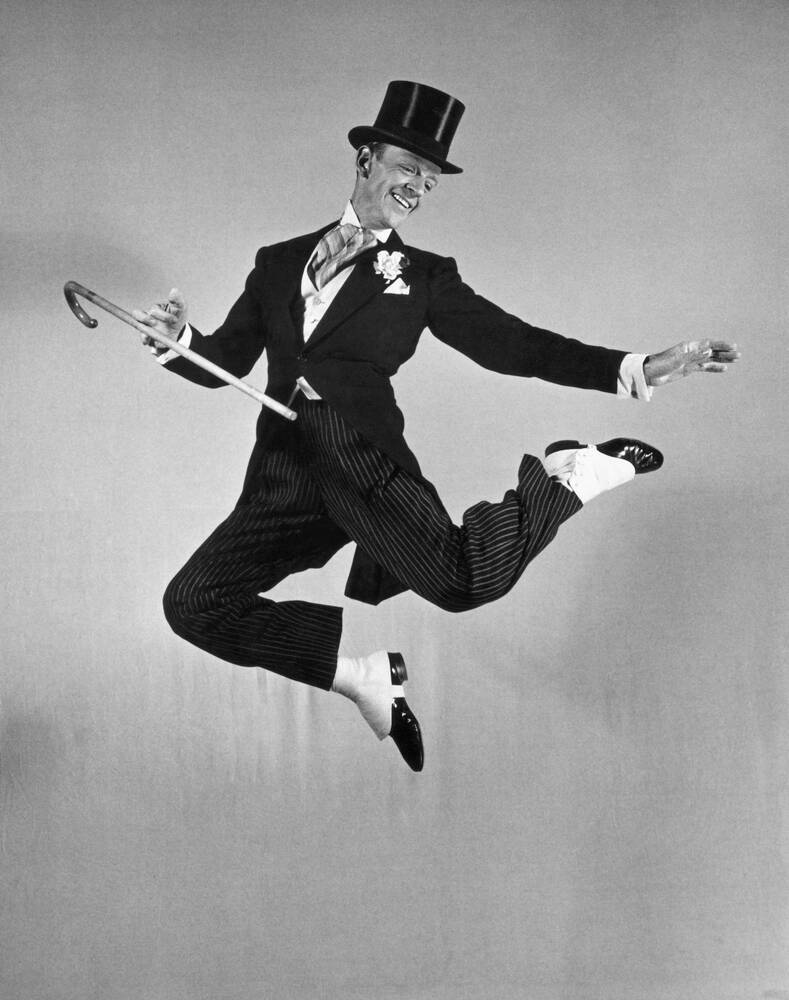
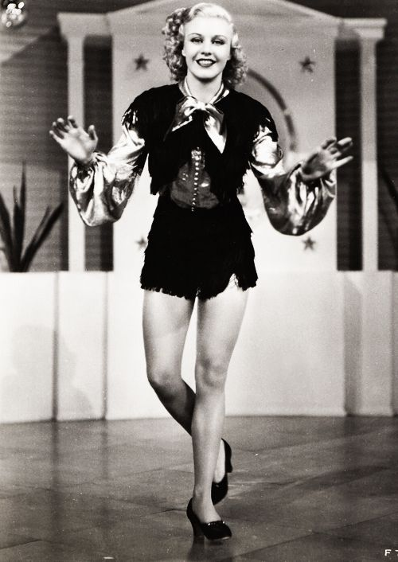
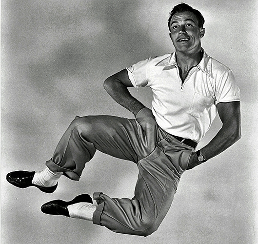
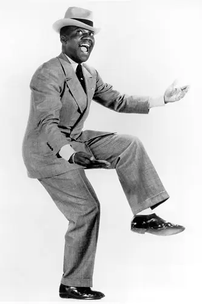
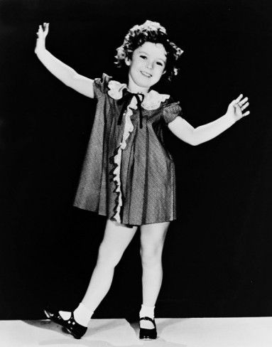

Tap dancing is a rhythmic, exciting and dynamic form of dance. It has a rich history that
began over a hundred years ago, and has evolved into the modern tap style that we all know
and love.
Today, two major variations of tap exist: rhythm (jazz) tap and Broadway.
Broadway tap focuses on dance; it is widely performed in musical theater. Rhythm tap focuses
on musicality, and practitioners consider themselves to be a part of the jazz tradition.
Click on the links above to find out more!
Did You Know?
- Tap dancing is the combination of Irish clog & step dancing with the rhythms of West African drumming.
- In the mid 1600s, Scottish and Irish laborers brought their social dances with them to America.
- Slaves were inspired by the rapid toe and heel action and added it to West African step dances.
- The two styles slowly influenced each other forming a hybrid that was both fluid and rhythmic.
- The term “tap” started being used around 1902.
- There were two popular techniques. A fast style that used wooden-sole shoes, or Buck-and-Wing, and a smoother style that used leather-sole shoes, called Soft-Shoe.
- Eventually, people started to hammer pennies or nails into the toes and heels.
- The metal plates, or taps, were later added to leather-soled shoes and started being used in a style that combined elements of both techniques by the 1920s.
- There were many movies made with tap dancing numbers from the 1930s to the 1950s.
- Tap numbers became an important part of both movies and television.
- Shirley Temple “tapped” onto the screen at 6 years old.
- Gene Kelly, introduced a style of tap heavily influenced by ballet.
- Fred Astaire and Ginger Rogers, combined tap and ballroom, to create beautiful dance scenes that were often captured in a single take!
- The first rule of tap is to keep your knees relaxed and your weight in the ball of your foot.
- Tap dancing takes a great deal of work and dedication. But it is worth it! Taking tap increases your rhythm, balance, musicality, and showmanship.
- Taps are now screwed onto the bottom of shoes. This is not just to keep them on the shoe!
- The taps can be tightened or loosened to change the sound or “tone” of the shoe.
- It also means that any pair of hard soled shoes can become tap shoes! This makes for some awesome costume tap shoes in productions.
Famous Tappers
Below are some of the most famous tap dancers of all time.
    
Click on the images above to learn more!
Choosing Tap Shoes

Use the table below, to choose the right tap shoes for you.
| Heel | Sole | Level | |
|---|---|---|---|
| Mary-Jane | Low | Full | Children |
| Oxford | Low | Full | Beginner | Low | Split | Advanced |
| Character | High | Full | Advanced |
Learn To Tap
Now you've got your tap shoes, let's learn to tap! Click HERE to access our free beginners tutorial